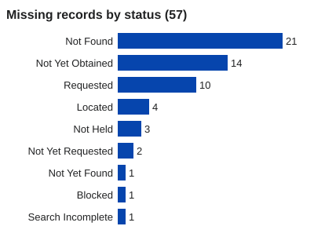

Research Library › Missing records
Missing records register
46 records that should exist. None is held in this archive. 19 have been searched for and not found.
Each entry is a blank evidence artifact page with its own catalogue ID (MR-####). It states why the record should exist — by statute, by ordinary practice, or because another record refers to it — who should hold it, and what each search has returned so far.
How to read this register
- Not found: the holder has replied that it does not hold the record, or a search found nothing.
- Requested: asked for; no answer yet, or the answer did not address it.
- Not yet obtained / located: the holder is known and the record has not been asked for or collected yet.
- Catalogue IDs never change and are never reused. New entries are added as the research continues.
- The earlier register (M-### entries) stays at Missing Records Register; entries here cross-refer to it.

- MR-0001 Instrument recording the 1667 acquisition of Tŷ Mawr by the Williams family
1667 · NOT YET FOUND · 0 searches
Should be held by: Not identified. Family title papers were removed from the farmhouse c.1950–52 (EV-0026); estate collections at - MR-0002 1877 agreement between the Bute trustees and Daniel Thomas & Son (sale or quarry lease), with plan
1877 · NOT FOUND · 3 searches
Should be held by: Bute estate collections (Glamorgan Archives; National Library of Wales; Cardiff Central Library Bute papers); - MR-0003 February 1916 yearly agricultural tenancy of the whole farm to John Williams, with plan
1916-02 · NOT FOUND · 0 searches
Should be held by: Bute estate / Mountjoy records; WGR and BP deeds packet; parties' 1986–87 litigation files - MR-0004 1928 last rent receipt for the house parcel
1928 · NOT FOUND · 0 searches
Should be held by: Family papers (removed c.1950–52, EV-0026); Thomas family or estate rent books - MR-0005 Conveyance on sale of 25 December 1938 (Mountjoy / Bute to Western Ground Rents Ltd), with plan and land schedules
1938-12-25 · NOT FOUND · 2 searches
Should be held by: BP Properties Ltd / successors (deeds packet); HM Land Registry first-registration files WA231076 and WA240304 - MR-0006 Mountjoy mortgage over Western Ground Rents property and its discharge (register of charges)
1938–1969 · LOCATED, NOT YET OBTAINED · 0 searches
Should be held by: The National Archives (WGR company file BT 31/87651, open, not digitised); BP deeds packet - MR-0007 Surrender and re-grant of 2 February 1949 (tenancy to Frederick Buckler)
1949-02-02 · NOT FOUND · 0 searches
Should be held by: WGR agents and solicitors; BP litigation file (Linklaters & Paines, 1986–87) - MR-0008 1955 High Court possession order (Order 14), writ of possession and the officer's execution return of 4 July 1955
1955-07-04 · NOT FOUND · 0 searches
Should be held by: High Court (Queen's Bench) records, Ministry of Justice / HMCTS; The National Archives (J series) if transferr - MR-0009 Water undertaker records of the supply to the farmhouse being cut off (c.1949–1958)
c.1949–1958 · NOT FOUND · 2 searches
Should be held by: Dŵr Cymru Welsh Water (successor to the Cardiff water undertaking); Glamorgan Archives (council water committe - MR-0010 Plan to the deed of 29 March 1961 (WGR, South Western Brick & Tile and Cardiff) — the woodland
1961-03-29 · NOT YET OBTAINED · 0 searches
Should be held by: HM Land Registry (WA735527 filed deeds); Cardiff Council deeds; Forest of Cardiff successors - MR-0011 Cardiff County Court possession order of 11 December 1962 (farmhouse and garden), plaint and plan
1962-12-11 · NOT FOUND · 1 search
Should be held by: Ministry of Justice / HMCTS (Cardiff County Court); Glamorgan Archives if transferred - MR-0012 September 1974 application for leave to enforce the 1962 order, its supporting sworn statement, the warrant and the 31 October 1974 withdrawal
1974-09-19 · NOT FOUND · 2 searches
Should be held by: Ministry of Justice / HMCTS (Cardiff County Court); BP's solicitors' file - MR-0013 1974 county court possession action: pleadings, the 3 July 1974 defence relying on the Limitation Act 1939, and the adjournment record
1974-07-03 · NOT FOUND · 0 searches
Should be held by: Ministry of Justice / HMCTS; the parties' solicitors - MR-0014 Retention or destruction record for the Cardiff County Court files of 1962 and 1974
after 1974 · NOT FOUND · 1 search
Should be held by: Ministry of Justice / HMCTS - MR-0015 Conveyance of 31 December 1969 with plan (WGR to BP Pension Trust), recited as root of title
1969-12-31 · NOT FOUND · 0 searches
Should be held by: BP Properties Ltd / successors; HM Land Registry first-registration files - MR-0016 Stamp-office "particulars delivered" forms for the 1938, 1969 and 1975 conveyances
1938; 1969; 1975 · REQUESTED, NO ANSWER YET · 0 searches
Should be held by: Valuation Office Agency / HMRC; The National Archives (Inland Revenue series) - MR-0017 VG41 village-green registration file (16 June 1970): application, statutory declaration, map, objections and provisional/final registration notices
1970-06-16 · REQUESTED, NOT ADDRESSED · 0 searches
Should be held by: Vale of Glamorgan Council (registration authority, successor to Glamorgan County Council); Glamorgan Archives - MR-0018 1971 Abstract of Title (BP Pension Trust), lodged at first registration
1971 · NOT YET OBTAINED · 0 searches
Should be held by: HM Land Registry (first-registration files) - MR-0019 Ordnance Survey revision record for the 1971 change to sheet XLVII.6 at Tŷ Mawr
1971 · REQUESTED, NO SUBSTANTIVE REPLY · 0 searches
Should be held by: Ordnance Survey; The National Archives (OS series) - MR-0020 HM Land Registry Form A13 (list of documents lodged), examiner's requisitions and any inspection note for WA231076 and WA240304 (1982–83)
1982-11-30 to 1983-05 · REQUESTED, PENDING (SAR due 28 Oct 2026) · 0 searches
Should be held by: HM Land Registry - MR-0021 HM Land Registry notification sent to the occupier after the 1983 registration
1983 · REQUESTED, PENDING · 0 searches
Should be held by: HM Land Registry - MR-0022 Death registration entry for Mary Doreen (Nancy) Williams (died 26 March 1983)
1983-03 · NOT FOUND · 6 searches
Should be held by: Cardiff and Vale register offices; General Register Office (index) - MR-0023 Grant of probate or letters of administration for Mary (Nancy) Williams
1983 · BLOCKED (death certificate) · 0 searches
Should be held by: Ministry of Justice (Probate Service) - MR-0024 Litigation files for BP Properties Ltd v Buckler, 1986–87 (High Court trial and appeal bundles)
1986–1987 · NOT YET OBTAINED · 0 searches
Should be held by: Ministry of Justice / HMCTS; Linklaters (for BP); the appellant's solicitors' successors - MR-0025 2 February 1987 application and plan merging WA240304 into WA231076
1987-02-02 · REQUESTED, PENDING · 0 searches
Should be held by: HM Land Registry - MR-0026 1988 spot-listing assessment of the farmhouse (Welsh Office / Cadw), with the transfer or destruction docket
1988 · NOT FOUND · 2 searches
Should be held by: Welsh Government / Cadw; Wales Office (successor to the Welsh Office) - MR-0027 Notice of intended demolition of the farmhouse given to the council (December 1988), and any counter-notice
1988-12 · REQUESTED, NOT ADDRESSED · 1 search
Should be held by: Vale of Glamorgan Council (building control); Glamorgan Archives - MR-0028 RCAHMW correspondence between C.N. Johns and the occupiers of Great House Farm, 1986–87
1986–1987 · NOT FOUND (holder records loss) · 2 searches
Should be held by: RCAHMW (National Monuments Record of Wales) - MR-0029 Licences or orders for the removal of human remains from the site (burials found 1989–1995)
1989–1995 · REQUESTED, NOT ADDRESSED · 1 search
Should be held by: Ministry of Justice (successor to the Home Office burials function); Church in Wales; Vale of Glamorgan Counci - MR-0030 Planning file for outline permission 3/8996/3337 (about 13 houses, 1972)
1972 · NOT FOUND · 1 search
Should be held by: Vale of Glamorgan Council (successor planning authority); Glamorgan Archives - MR-0031 Appeal or call-in papers for 89/01396/OUT and 92/00671 (if any)
1989–1992 · NOT FOUND · 1 search
Should be held by: Planning and Environment Decisions Wales (successor to the Planning Inspectorate in Wales) - MR-0032 Valuation report on the land (Vale of Glamorgan Council request 00211027)
not stated · NOT FOUND · 1 search
Should be held by: Vale of Glamorgan Council - MR-0033 Land Authority for Wales board papers, 21 October–25 November 1988 (TNA WA 9/49)
1988-10 to 1988-11 · LOCATED, NOT YET OBTAINED · 0 searches
Should be held by: The National Archives (WA 9/49) - MR-0034 Search record of The National Archives' FOI search CAS-347296 (terms beyond the four used)
2026-09-23 · SEARCH INCOMPLETE · 1 search
Should be held by: The National Archives - MR-0035 Amgueddfa Cymru search log for FOI 2026-024 / 032 / 036 (which results were excluded and why)
2026 · NOT HELD (holder states) · 2 searches
Should be held by: Amgueddfa Cymru – Museum Wales - MR-0036 Bute conveyance of 23 February 1905 referred to on the WA231076 file
23 February 1905 · NOT YET OBTAINED · 0 searches
Should be held by: HM Land Registry, WA231076 title file (document referred to at first registration). - MR-0037 Drain agreement and plan between John, Marquis of Bute and James Pelham Stuart Corbett
15 May 1924 · NOT YET OBTAINED · 0 searches
Should be held by: HM Land Registry, WA231076 first-registration file item 2 (also described in woodland register WA735527, charg - MR-0038 Mary (Nancy) Williams’s “previous statement” on the 1955 and 1962 applications (missing)
1955 to 1962 (unknown) · NOT YET OBTAINED · 0 searches
Should be held by: Holder unknown; Court files (register items A-014, A-057). Evidence status: MISSING FAMILY EVIDENCE. - MR-0039 WGR Tenancy Offers Concerning Remaining House and Garden (1959 and 1965)
1959 and 1965 · NOT YET OBTAINED · 0 searches
Should be held by: Holder not located; WGR and solicitors’ files - MR-0040 H. J. Thomas architectural survey and floor plan of the house (RCAHMW / NMR)
1974 · NOT YET OBTAINED · 0 searches
Should be held by: Royal Commission on the Ancient and Historical Monuments of Wales (NMR); NMR 6048941, 6048943, 6048945 (survey - MR-0041 Conveyance and plan, BP Pension Trust to BP Properties (farmhouse and garden)
23 May 1975 (item 13 plan is described as dated 23 February 1975) · NOT YET OBTAINED · 0 searches
Should be held by: HM Land Registry, title WA240304 (items 1, 12, 13) - MR-0042 GGAT letter or note warning of archaeological sensitivity at Great House Farm
1 October 1982 · NOT YET OBTAINED · 0 searches
Should be held by: GGAT / Heneb (Glamorgan–Gwent Archaeological Trust); Copy served on Cadw on 17 September 2026. No reference nu - MR-0043 Title WA231076 Items 15, 16, 18, 19, 23: 1983–84 registration activity
1983–84 · NOT YET OBTAINED · 0 searches
Should be held by: HM Land Registry historic/title file; Title WA231076, Items 15, 16, 18, 19 and 23 - MR-0044 East Vale Local Plan (February 1987): buildings on site to be retained
February 1987 · NOT YET OBTAINED · 0 searches
Should be held by: Vale of Glamorgan Council - MR-0045 Land at Great House Farm, Llandough: An Archaeological Assessment (GGAT, 1990)
August 1990 · NOT YET OBTAINED · 0 searches
Should be held by: Not stated - MR-0046 Transfer of the woodland to Forest of Cardiff (title WA735527), with plan
10 November 1994 · NOT YET OBTAINED · 0 searches
Should be held by: HM Land Registry (WA735527)
Machine-readable copy: missing-records.json